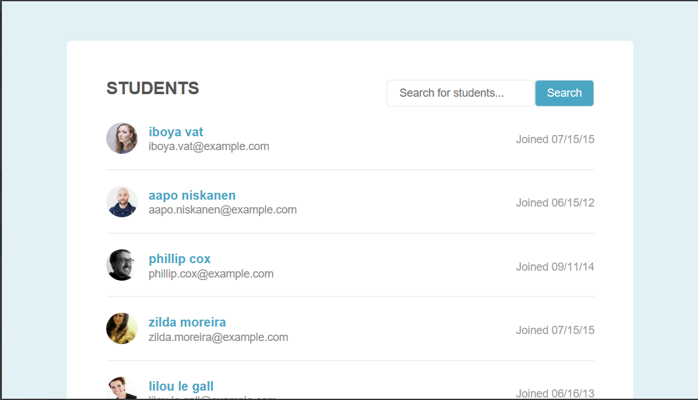
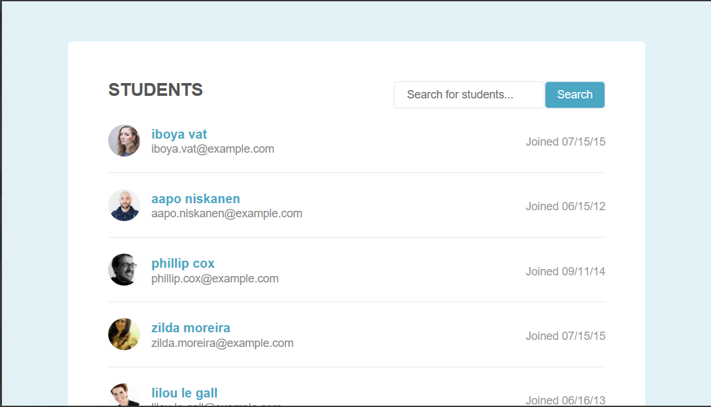
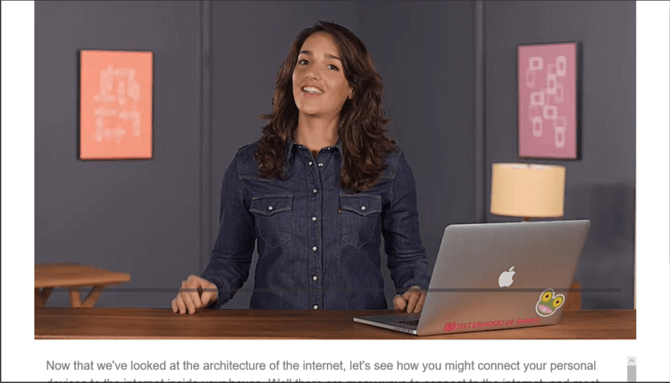
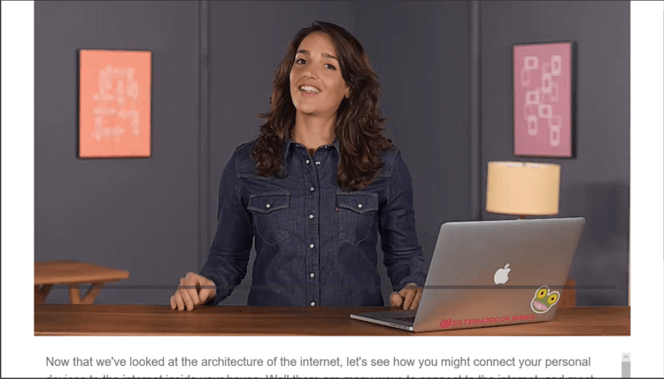

Front End Project 5: I used programming principles to refactor a standard CSS stylesheet to Sass by
identifying repeating patterns, using variables, and adding mixins.
Full Stack Project 5: I created a form to search and view information about films
while practicing the needed skills to use AJAX to load data from a server.
Full Stack Project 7: Used Twitter's REST API to communicate with Twitter,
retrieve JSON data, and display the results using Node.js, Express and PUG.
Requires the users twitter API key in a configuration file.
Front End Project 9: I built a single page application (SPA) using AngularJS. The project
communicates with a Node.js REST API, to add, retrieve and display recipes.
Front End Project 10: Created a web application for searching, adding and updating items in a
lending library, using JavaScript, Node.js, Express, and an SQLite Database.
Full Stack Project 11: In this project, I created a REST API using Express. The API provides
a way for users to review educational courses: users can see a list of courses in a database;
add courses to the database; and add reviews for a specific course.
 Responsive Layout
Pagination Filter
Responsive Layout
Pagination Filter
 Online Registration
Online Registration
 Interactive Form
Interactive Form
 Photo Gallery
Tic Tac Toe
CSS to SASS
Photo Gallery
Tic Tac Toe
CSS to SASS
 Movie Search
SVG Update
Movie Search
SVG Update
 Content Scraper
Video Player
Content Scraper
Video Player
 Twitter Interface
Twitter Interface
 Accessibility Refactor
Accessibility Refactor
 Gulp
Dashboard
Gulp
Dashboard
 Single Page Recipe App
Library Manager
Performance Optimization
Rest API
Single Page Recipe App
Library Manager
Performance Optimization
Rest API